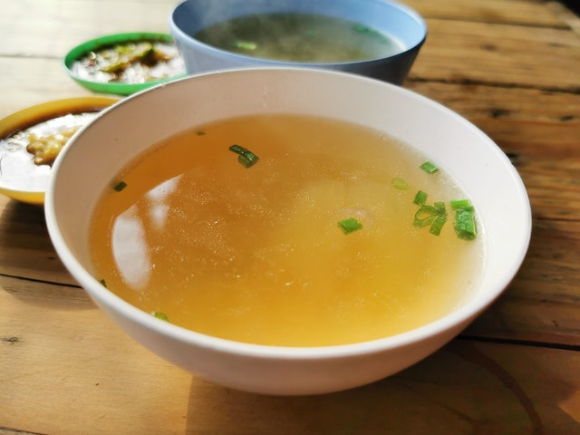

Chicken soup

Description
This is simply a chiken soup. In Russia it calls "bul'on"
Ingredients
chiken (whole or pieces)
onion
carrot
laurel leaf
peppercorns
salt
parsley
Steps
put chicken into the pot and fill it the water then cook it
clean onion and carrot
cut the onion onto two pieces
cut carrot onto 3 or 4 flat pieces
after the water in the pot is boiling remove foam and reduce the fire on minimun
heat the frying pan
fry onion and carrot without sunflower oil
put onion, carrot, laurel leaf, parsly and salt into the pot
cool two hours